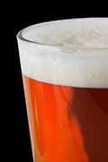

The first time you're presented with a homebrewed beer, youmight feel a bit skeptical. After all, the bottle is all wrong. Itdoesn't have a label, and it might even be a little dusty, asthough it's been sitting in the corner of someone's basement. (Andmaybe it has.) But if you do drink that bottle of homebrew, you'lldiscover that most homebrewed beer not only tastes as good asstore-bought beer, it's often a lot better. And - what a nicebonus! - it's probably cheaper, too.
Homebrew has distinctive flavors.
The best thing about homemade beer is its variety, because when youmake your own, you can experiment with any ingredients ortechniques that you choose and create beer with interesting andunique flavors.
Unfortunately, the most successful American beers are not a verydiverse group, and tend not to have very strong flavors. Microbrewsoffer a much wider range of styles and tastes, but because thesebeers come from small breweries, they're not always easy to find,and in many parts of the United States, you can't order beer orwine by mail. (The laws about shipping alcohol arecomplicated.)
There's another problem with shipping beer: It doesn't alwaysage or travel well. If you drink imports, the beer you like maytaste quite different in its country of origin than it does by thetime it gets to your refrigerator. When you brew your own, you havemuch more control over the process.
Homebrew is green beer.
Of course, the beer isn't literally green unless you go a littlecrazy on St. Patrick's Day and throw in some food coloring. (Also,'green beer' is a term for beer that's still too young to havedeveloped its full flavor - again, not what we're aiming for here.)But from an environmental standpoint, brewing your own beer isdefinitely green. Here's why:
Getting started is simple.
Brewing is a craft, and many people brew for competitions. Someeven become professional brewers. But although advanced homebrewingtechniques can be sophisticated, making your first batch of beerisn't that complicated. It will probably be drinkable, and you canfind everything you need in a simple kit for about $60 or $70.(Look for these from local homebrewing supply stores, or order oneonline).
Once you start brewing, the ingredients are inexpensive: Dollarfor dollar you can drink better beer more cheaply if you brew yourown than if you buy it. It's easier to start with malt extract, butbrewing with whole grains is even cheaper and gives you moreoptions.
If you're looking for homebrewing advice, you'll find a slew ofhelpful books with techniques and recipes, as well as twomagazines: Brew Your Own and Zymurgy. You'll alsofind a lot of likeminded people. You can count on finding otherhomebrewers at online discussion forums (trywww.homebrewtalk.com), local brewer's clubs,homebrew competitions or microbreweries.
We'd love to hear about your experiences with homebrewing. Feelfree to share your triumphs, failures or even a recipe in ourcomments section.
|
 For the best tasting beer, try brewing your own! |
|
|